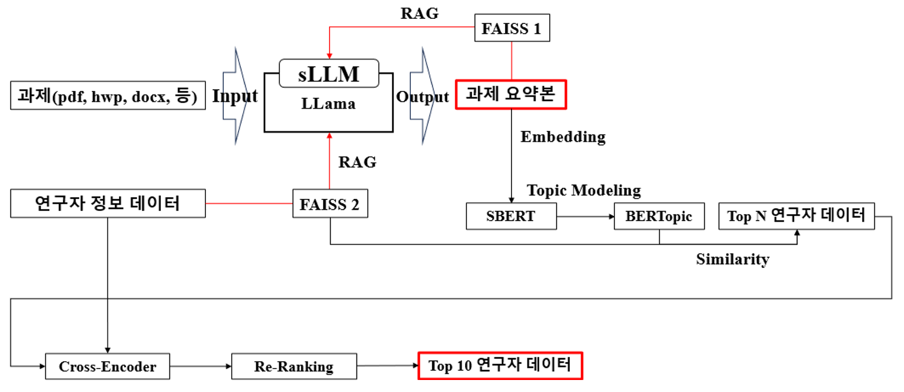
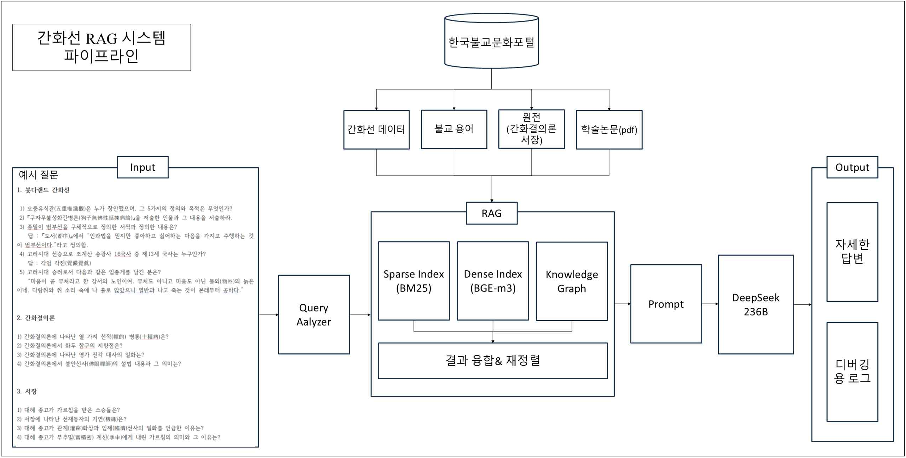
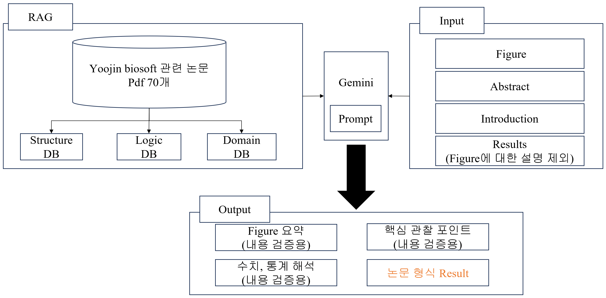
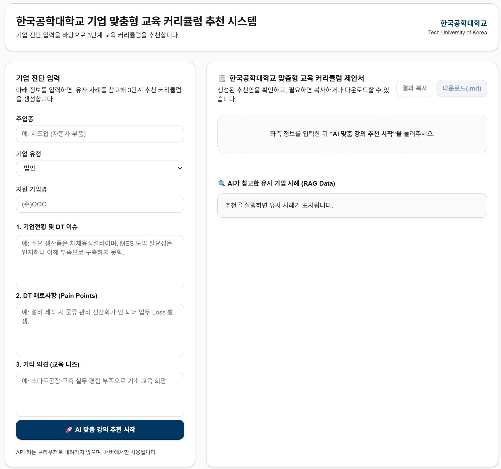

Projects
산업 AX · LLM/RAG · 추천 시스템 프로젝트
보험 경험조정 분석 AX
2026.08 – 2026.10
예실차 원인분석과 리포팅 자동화
문제 정의
- 6천만 건 이상 보험 계약 데이터에서 예실차가 커지는 계약군 탐색 필요
- 계리사 수작업 분석의 탐지 속도·반복성·설명가능성 한계
- AI 결과는 수치뿐 아니라 원인 후보와 근거 데이터까지 설명되어야 함
분석 방법론 — Custom Rule Mining
- LightGBM의 Gain 기반 트리 분할 원리를 분석 목적에 맞게 직접 구현
- Top-Down: 전체 모집단에서 영향 큰 조건을 단계적으로 분할
- Bottom-Up: 고위험 세부 조합에서 조건을 완화하며 희귀 패턴 탐색
- Dual Path: 두 경로의 점수·지지건수를 비교해 탐색 경로 전환
사후 검증
- Rule 시계열: 월별 N·예실차 합계·평균·ASI·AMD로 지속성 확인
- 동일계약 Bridge: 전월→당월 속성 변화와 예실차 변화의 동반 여부 분석
- 일시적 이상과 반복적으로 악화되는 계약군을 구분
AX 연동
- LLM/AI Agent로 결과 해석·점검사항 자동 생성
- 자연어 질의, 재분석, 리포트 생성까지 이어지는 업무자동화 구조로 확장
월별 계약데이터
↓
레버변수 발굴
↓
Top-Down / Bottom-Up
↓
Dual Path
↓
Rule 시계열 · Bridge
↓
LLM Agent 리포팅
LightGBMRule MiningLLM AgentExplainability
산학협력단 과제–연구자 추천 시스템
2025.07
NTIS 공고 요약 → 연구자 DB 매칭 → Top-K 추천
한국전자거래학회 공모전 장려상
배경
- NTIS 국가 R&D 공고는 양이 많고 업데이트가 잦아 담당자의 수동 확인 부담이 큼
- 공고문 표현과 연구자 논문·전공·키워드 표현 간 차이로 단순 키워드 매칭에 한계
데이터 구축
- 과제 DB: NTIS 국가 R&D 공고 및 첨부 PDF/HWP/DOCX
- 연구자 DB: 동국대학교 Research Profiles의 전공·키워드·논문·실적
- 연구자 프로필을 JSONL로 구조화하고 임베딩 후 FAISS 인덱스 구축
핵심 기술
- LLM으로 과제 목표·기간·예산·지원조건·키워드 구조화
- SBERT 의미 임베딩으로 과제–연구자 유사도 계산
- BERTopic으로 연구주제 및 기술 키워드의 토픽 구조 정렬
- Cross-Encoder 쌍(pair) 재평가로 최종 Top-K 재정렬
업무 확장
- 과제 공고 + 제안서 양식 + 연구자 논문을 입력으로 LLM 기반 제안서 초안 자동작성 기능 구현

추천 파이프라인 (sLLM 요약 → SBERT/BERTopic → Cross-Encoder Re-ranking)
LLaMALangChainFAISSSBERTBERTopicCross-Encoder
한국불교유산 특화 LLM/RAG 시스템
2025.06
불교학술원 · 도메인 데이터 구조화와 Hybrid Retrieval
문제 인식
- 범용 LLM은 불교 전문용어·한자어·철학 개념에서 환각 발생
- 인물·사찰·문헌 관계와 법맥 질의처럼 Multi-hop 추론이 필요한 질문에 취약
데이터 구축
- 불교문화포털 기사 440건, 용어 3,023건, Q&A 4,350건 정제
- 간화선 원전·번역·주석 데이터를 문맥 단위로 청킹
- 인물·사찰·원전 관계성 데이터 1,155건을 Ontology로 구축
RAG 구조
- Dense Retrieval, BM25 Sparse Retrieval, Knowledge Graph 결합
- 질문 유형별 동적 가중치로 결과 융합·재정렬
- Streamlit 기반 웹 챗봇 프로토타입 UI 구축
검증
- 일반 LLM / Standard RAG / Hybrid RAG 결과 비교
- LLM-as-a-Judge와 불교학술원 전문가 평가 병행

간화선 RAG 파이프라인 (BM25 + BGE-m3 + Knowledge Graph)
Hybrid RAGBM25BGE-m3Knowledge GraphStreamlit
의료·바이오 논문 Results 자동작성
2025.11
(주)유진바이오소프트 · Figure + 통계결과 기반 RAG 문서자동화
연구 내용
- 의료·바이오 Figure와 통계결과를 논문 Results 문장으로 변환하는 파이프라인 기획
- 반복적인 실험결과 해석·문서 작성 시간을 줄이는 문서자동화 구조 설계
지식베이스 구조
- 관련 논문 약 70편을 참고 데이터로 구성
- Structure DB: 문장 구조와 서술 톤
- Logic DB: 통계기법별 해석 및 보고 규칙
- Domain DB: 의료용어와 분야별 배경지식
생성 방식
- Figure 요약·핵심 관찰값·통계 해석을 검증용 입력으로 활용
- Gemini + RAG로 실제 결과값에 근거한 Results 초안 생성

Results 자동작성 구조 (Structure · Logic · Domain DB + Gemini)
RAGGeminiDocument Automation
K-하이테크 교육과정 추천 시스템
2025.11
한국공학대학교 K-하이테크 사업단 · 기업 DX 진단정보 기반 맞춤형 교육과정 추천
배경
- 기업별 DX 컨설팅 결과를 바탕으로 컨설턴트가 수작업으로 교육과정을 추천
- 연도별 양식과 과정명 차이로 데이터 재활용과 추천 표준화에 한계
데이터 구축
- 2022~2025년 수행일지·훈련결과·만족도·현업적용도 약 130건 활용
- 과정명·동의어·연도별 문항 정규화 및 기업정보 익명화
- 기업 프로필·DX 수준·기술수요·제약조건을 표준 스키마로 구성
추천 · 자동화
- RAG로 유사 기업 사례와 교육과정 카탈로그 검색
- Fit + Impact + Feasibility 기반 랭킹
- 추천 이유·기대효과 및 결과보고서 자동 생성

기업 맞춤형 교육 커리큘럼 추천 시스템 화면
RAGRecommendationRanking